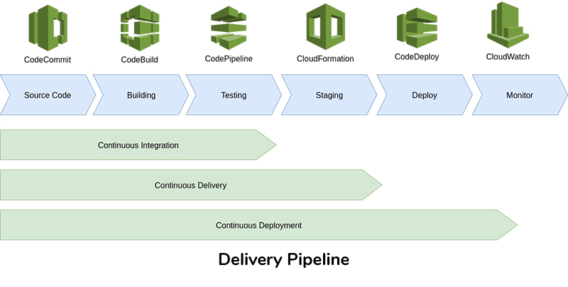
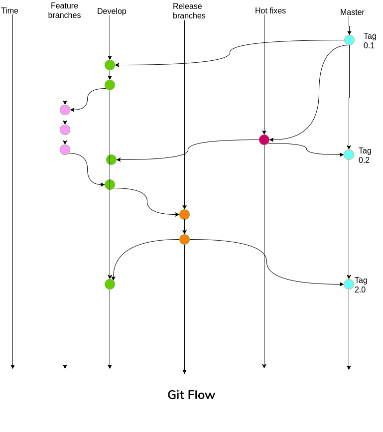

Cloud Enabled DevOps Strategy on AWS
Any organization which is serious about releasing iterations of bug free software, in a frequent manner should have some level of DevOps processes in place in their delivery pipeline. The following post will discuss how to implement a DevOps continuous delivery/deployment pipeline in the AWS Cloud infrastructure. Before we actually dig deeper into enabling DevOps on the cloud, let’s actually see what DevOps really is in the next section.
What is DevOps?
DevOps can be simply thought of as an organizational practice where it allows development and operational teams to work collaboratively. While this gives a broad definition, it’s important to highlight some of the underlying concepts that drives the DevOps practice. Automation is a key aspect in any DevOps implementation. Whether it is checking-out code, building, testing or deploying code, automation needs to be applied so that these tasks can be easily offloaded into any CI/CD tool. Resource provisioning for your applications is a tough task especially if the version of your application depends on certain versions of the infrastructure that your application run on. Manually keeping track of different versions for each and every application is a tedious and an error prone process. Furthermore in some occasions it requires to roll back to a specific application version thus requiring the infrastructure configurations to be mapped accordingly. Following an Infrastructure As Code or programmable infrastructure model mainly focusing on solving above mentioned problems. This will allow developers to code the infrastructure requirements the same way as the application code, enabling version control for the infrastructure.
Wall of Confusion
Typically the development teams write the code, perform testing and provide the release artifacts/binaries to be deployed into target deployment environments. Traditionally It is the operations team’s responsibility to provision resources, deploy applications and constantly monitoring application performance and issues. However this process leads to many issues in deployment time due to various mismatches between the developers environment and the production. Debugging errors that bubble up at the production is going to be time consuming and tedious since there is no transparency between development and deployment of the application. This is what some refers to as the wall of confusion because of the lack of visibility to both development and operations teams. One of the main goals of DevOps is to break this wall of confusion that lengthens the feedback loop.
Delivery Pipeline
Delivery pipeline represents the sequence of processes that enable propagation of software changes to production. This pipeline may be manual, semi-automated or fully automated. The degree of automation varies from organization to organization though higher degree of automation is always preferred. However more automation means more complexity in the implementation and the components of the pipeline have to be designed according to the type of application (microservices, monolithic, cloud native, etc..) being developed. Following is a depiction of a typical delivery pipeline and various tool offerings, for each stage in the pipeline, by the AWS platform.

The pipeline starts from the coding stage where the code changes by the developers end up in some type of version control repository. The changes of code should be built with other modules to ensure that the new code doesn’t break the build. This is performed in the build stage of the pipeline. If everything builds, the QA team can start their work on testing the build in QA environments. When the QA approves the build the pipeline will initiate the deployment of the artifacts of the build to the production and the constant monitoring process will be started. Typically several gatekeeping processes are in place between the stages to control execution of the pipeline. Organizations looking to adopt DevOps should drive for orchestration and automation of the stages of the delivery pipeline.
Source Control
Typically the source control is the starting point of the pipeline and having a branching strategy which allows continuous integration (CI) is vital. If the version control system of your choice is Git, the popular Git Flow pattern enables smooth operation of the CI. Git flow suggests that developers should work on their own respective feature branches and merge the changes to the develop. There exists a release branch containing code ready to be released at any point in time. When code is being released, release branch will be merged to mainline (master) and a new tag will be created on the master. Any bug fixes that needs to be immediately available, should be on a separate branch called hotfixes. Developers will simply checkout to the tag of the master on the hotfixes branch and simply merge the code back to master from the hotfixes to a new tag. All merges to master by either release branch or hotfixes branch must be merged back to the develop branch. Git Flow can be summed up using following diagram:

Source Control Using AWS CodeCommit
AWS CodeCommit is a fully managed (host, maintain back up and scale) service for hosting private Git repositories. It can be integrated with other AWS DevOps services such as CodePipeline, CodeBuild directly. CodeCommit uses S3, DynamoDB and IAM under the hood so that the data get stored will have a higher degree of security (auto encryption data at transit and data at rest) The pricing is cheap where it’s free for five users (50GB storage/month, 10,000 git requests/month)
Continuous Integration
Continuous integration is a practice requiring developers to check in code into a shared repository (develop/release) several times a day. Developers merge feature branches to mainline (master/develop) everyday and ideally each merge triggers a new build. Typically a build will consists of build step (Eg: executing make command or mvn compile/package) and a test suite execution step (All test suites [unit, component, e2e] get executed). If the new code breaks some tests or produce bugs, developers should be able to rectify the issues within couple of minutes.
A CI server is a type of software which supports above mentioned tasks in the build stage of the delivery pipeline. Out of many commercial and open source tools, Jenkins is the most popular go to tool for CI. It’s free, mature and easy to setup CI server written in Java. You can spin up a Jenkins ec2 machine on AWS if you want to take the responsibility of managing it by yourself.
Continuous Integration with AWS CodeBuild
Unlike jenkins on the EC2 approach AWS CodeBuild is a fully managed service which supports building, testing and packaging the code. It comes with pre-configured build environments for Java, .NET, Python, Ruby, Go. If you require custom build environment other than the pre-configured ones, you can use Docker images (ECR) and load them on CodeBuild. The artifacts of the builds can be stored on S3 for future reference or you can write scripts to transfer artifacts to artifact repository management system Eg: Nexus, Artifactory. Builds can be triggered by either manually or using AWS CodePipeline which will be discussed in a later section. CodeBuild’s pricing model is similar to other AWS services where you only pay for the time used to run the build so that it’s cheaper compared to running Jenkins on a separate EC2 24x7.
Continuous Integration with AWS CodePipeline
AWS CodePipeline is a fully managed CI/CD orchestration service and it’s pretty much manages the delivery pipeline in the cloud that was discussed earlier. CodePipeline can be configured to have CodeCommit/GitHub/S3 as the source provider and it has the capability to listen to a particular branch in CodeCommit to trigger execution of the Pipeline. By default the code changes are detected through the AWS CloudWatch service although it can be configured to run periodically. If the need be, the pipeline can be run manually using the AWS console.
AWS CodePipeline consists of multiple sequential stages (Eg: build, test, etc..). Within each stage has multiple actions that can run in parallel and each stage must have at least one action. Execution of the stages are sequential and failure of a single stage would prevent execution of the subsequent stages in the pipeline. As discussed in the delivery pipeline section, gatekeeping tasks are essential in any pipeline and the CodePipeline support such tasks that allows incorporating manual approval processes. A typical gatekeeping stage is where the head of the QA approves the release so the build can be deployed into target environments. The notification for approval will be received for the relevant parties by email via AWS SNS or AWS console notifications. The CodePipeline can generate a diagram as follows to reflect your pipeline setup.

Continuous Delivery
Continuous delivery simply means keeping a branch of code in a deployment ready state at any point in time. In order for an organization to adopt continuous delivery it must follow the preceding CI processes (integration, building, testing, etc..) for faster releases of incremental changes. This can be achieved on AWS through combining tools like CodeCommit, CodePipeline and CodeBuild.
Continuous Deployment
Continuous deployment is an extension of continuous delivery which goes one step further by automatically triggering deployments to production. This can mean whenever the QA approves the release, the build artifacts will get deployed to target production environments. To simply put, the main difference between Continuous Delivery and Continuous Deployment is the automated deployment of release artifacts/binaries.
Continuous Deployment using AWS CodeDeploy
AWS CodeDeploy is a service that automates software deployments to EC2, AWS Lambda, and instances running on-premises. CodeDeploy has two deployment methods namely In-place deployments and Blue/Green deployments. In-place deployments would allow stopping the instance and deploying the new application version. Instance will be de-registered during the deployment. On the other hand, Blue/green deployments have two identical cluster of ec2 instances called blue and green. The latest application version then get installed into the replacement group of ec2s and when all the ec2s are updated with the new version, the load balancer reroutes the traffic from old cluster to new cluster preventing any application downtime.
CodeDeploy Agent software must be installed and started on the EC2s prior to any deployment using CodeDeploy. This can be achieved through running some scripts using the user data option of the instance.
CodeDeploy requires a configuration file for deployment called appspec.yaml file to be on the root of your source repository. This file specifies the following to the CodeDeploy Agent:
CodeDeploy can work without CodePipeline but deployments have to be triggered manually.
Infrastructure as Code (IaC)
Infrastructure as Code (IaC) also known as programmable infrastructure simply means writing code to model and provision infrastructure resources in the environments where the applications run. This would provide the following benefits:
AWS CloudFormation Templates provides all the above benefits on the AWS infrastructure. CloudFormation Template file is either a json or yaml file which specifies all the resources that needs to be provisioned on AWS. Launching a CloudFormation Template will create what is known as a stack. CloudFormation Stack is like a snapshot of the provisioned resources at a given point in time, thus changes to the stacks can be tracked. If for some reason a stack fails to create, CloudFormation can be configured to roll back so that the previously created resources will be deleted. CloudFormation comes with certain caveats like if a stack fails to create you have to manually delete it and it can’t change the resources created outside of the stack. However when you delete the stack, all the resources created with that stack will also be deleted.
Summary
Implementing DevOps is not something that can be achieved overnight, instead it requires a proper plan to adopt DevOps on each stage of the delivery pipeline. DevOps is not about just automating everything but it’s also about good communication among various teams contributing in various ways to the final product. AWS has suite of product offerings to enable faster adoption of DevOps culture on the cloud and like many other solutions there are some caveats that should be addressed. .
Thilanka Liyanarachchi
Senior Software EngineerLET'S GET IN TOUCH
CONTACT US
PHONE
+94112 337 516 (SL)
ADDRESS
#514 San Jose, CA 95112, USA